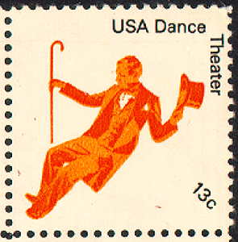
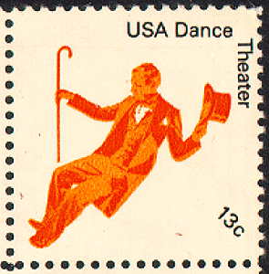

Chapter 5
 

Roger Button leaned over to his son. "That," he said, "is young Hildegarde
Moncrief, the daughter of General Moncrief."
Benjamin nodded coldly. "Pretty little thing," he said indifferently. But
when the negro boy had led the buggy away, he added: "Dad, you might
introduce me to her."
They approached a group, of which Miss Moncrief was the centre.
Reared in the old tradition, she curtsied low before Benjamin. Yes, he
might have a dance. He thanked her and walked away‑staggered away.
The interval until the time for his turn should arrive dragged itself out
interminably. He stood close to the wall, silent, inscrutable, watching
with murderous eyes the young bloods of Baltimore as they eddied
around Hildegarde Moncrief, passionate admiration in their faces. How
obnoxious they seemed to Benjamin; how intolerably rosy! Their curling
brown whiskers aroused in him a feeling equivalent to indigestion.
But when his own time came, and he drifted with her out upon the
changing floor to the music of the latest waltz from Paris, his jealousies
and anxieties melted from him like a mantle of snow. Blind with enchantment,
he felt that life was just beginning.
"You and your brother got here just as we did, didn't you?" asked
Hildegarde, looking up at him with eyes that were like bright blue
enamel.
Benjamin hesitated. If she took him for his father's brother, would it be
best to enlighten her? He remembered his experience at Yale, so he decided
against it. It would be rude to contradict a lady; it would be criminal
to mar this exquisite occasion with the grotesque story of his origin.
Later, perhaps. So he nodded, smiled, listened, was happy.
"I like men of your age," Hildegarde told him. "Young boys are so idiotic.
They tell me how much champagne they drink at college, and how
much money they lose playing cards. Men of your age know how to appreciate
women."
Benjamin felt himself on the verge of a proposal‑with an effort he
choked back the impulse. "You're just the romantic age," she continued‑"
fifty. Twenty‑five is too wordly‑wise; thirty is apt to be pale from
overwork; forty is the age of long stories that take a whole cigar to tell;
sixty is‑oh, sixty is too near seventy; but fifty is the mellow age. I love
fifty."
Fifty seemed to Benjamin a glorious age. He longed passionately to be
fifty.